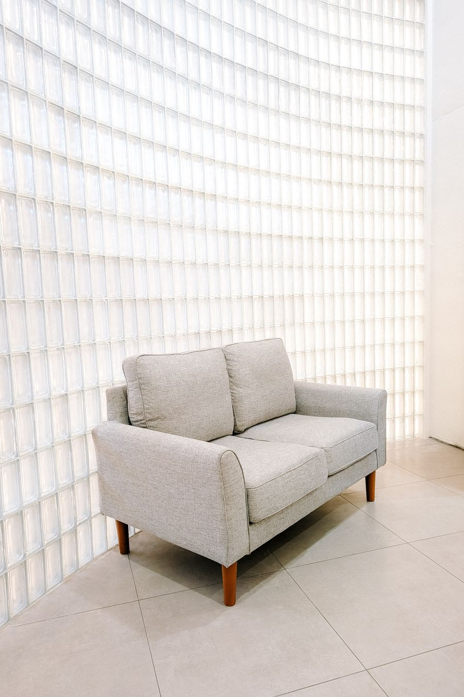
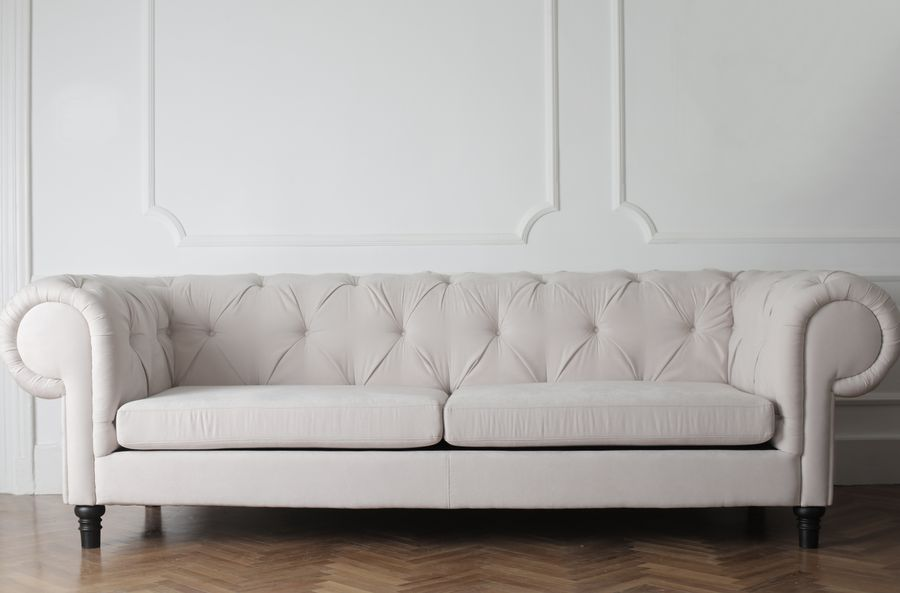
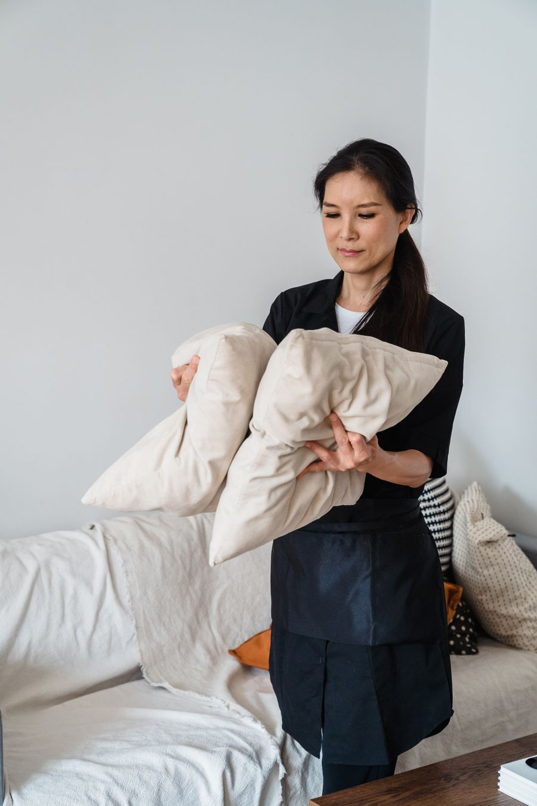
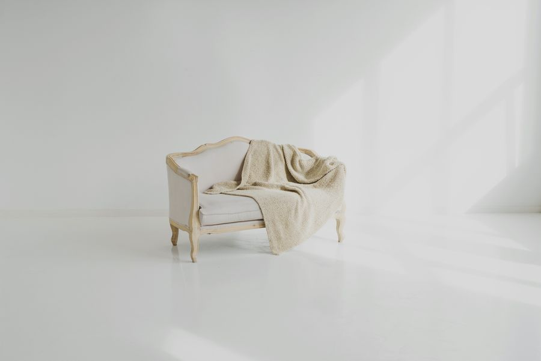

Limpieza profesional de sillones, colchones y alfombras, a domicilio en Santiago.
Agendar una visitaUsamos productos no tóxicos, trabajamos con técnicos certificados y garantizamos el resultado.

Trabajamos directamente en tu hogar, con el mismo cuidado que le darías tú.


Cada visita la hace una persona capacitada en el uso de productos y maquinaria profesional — no un curso improvisado. Llegamos puntuales, trabajamos con cuidado por tus muebles y dejamos el espacio tal como lo encontramos.
Si algo no queda como esperabas, volvemos sin costo adicional.
Nos cuentas qué necesitas limpiar y te respondemos con un precio claro.
Eliges el día y horario, incluso fines de semana.
Trabajamos en tu hogar y dejamos todo terminado el mismo día.
Pensé que el sillón ya no tenía arreglo por las manchas de los niños. Quedó irreconocible.
Llegaron puntuales, fueron muy profesionales y el resultado duró semanas.
El colchón de mi hija con alergias quedó libre de ácaros. Se nota la diferencia al dormir.
